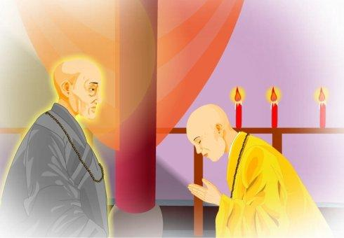

明年是印光大師圓寂七十周年紀念，故此特別用心製作有關一系列動畫以緬懷及紀念一代高僧印光大師，希望大家看後法喜充滿，菩提精進。
有關印光大師法號的密意，我在拙作《印光大師念佛三昧修證心要》一文中已清楚說明，揭出當中秘密，請大家亦自行參閱。
以後我將會用白話撰文詳細解說如何一步步修證念佛三昧，在此亦再提醒各位同修一定要細心研究大勢至菩薩的肉身言教－《印光大師文鈔》，你將會受用一生，感恩不盡！
動畫下載地址：
http://manjuvimalakirti.com/ikts.swf
本空法师俗姓张，名汝钊，号曙蕉。出生在浙江省慈溪县庄桥的一个书香之家。她自幼酷爱读书，聪颖过人，诗词歌赋、琴棋书画无一不精，被乡裏誉为「女才子」。中学毕业後，她考取了上海沪江大学，後又转南方大学读书。当时发生了震惊世界的「五卅惨案」，日本兵惨杀顾正红烈士。全校同学义愤填膺，上街游行示威。她勇敢地率领大家高喊口号，并散发传单，不幸被捕。後来被学校当局以「闹风潮」的罪名开除学籍。在章太炎先生的帮助下，她转入国民大学就读。二十六岁，在该校英文文学系毕业。这时，她把十多年来所写的诗词作品作了一番删削整理，编为《绿天簃诗词集》，公开出版。这些诗词感情真挚，音韵铿锵，清丽婉约，脍炙人口，在当时文学界引起很大轰动。
一九二八年，张汝钊以她卓越的才能被聘任宁波图书馆馆长。嗜书如命的她，从此「坐拥书城不羡仙」，一心读书和写作。当年夏天，天气炎热，好友梅夫人等邀她去普陀山避暑。她早知道普陀山佛灵山秀，石奇景美，金沙碧浪，海阔天空，是著名的观音菩萨道场。因此，很高兴地答应了。第二天，便与梅夫人等六七位女友从宁波轮船码头上船。
中午时分，船到普陀山短姑道头。女伴们登岸後，先到观音洞庵吃过午饭。然後游历附近一带的胜。观音洞在梅岑山西麓，传说为观音大士示现之处，洞广如室，中间有一天然石柱支撑，上广下锐，倒注入地，有垂云倒浪之奇，洞内环行可通，石柱、石壁镌观音大士像；洞顶白石累叠，古树嵌生，风景十分奇特。附近有二龟听法石：两石龟一蹲岩顶，昂首延颈，一缘岩壁，筋膜尽露，睨之欲动，相传经观世音点化而成；又有磐陀石，两巨石相累如盘，下石高耸锐顶，可容二三十人，上石高二．七米，体积四十馀立方米，面广底锐，呈菱形，两石相累处仅一点，观之欲坠，势若累卵。上有「磐陀石」、「天下第一石」等题刻，「磐陀夕照」为普陀十二景之一。
女伴们望看这一处处佳景，真是目不暇接，赞声啧啧。梅夫人要汝钊即景作诗，以助游兴。汝钊想了想，遂当场吟了一首《上观音洞》诗：
观音圣迹访遗综，更上南山第一峰。
万里烟霞空色相，一天云气荡心胸。
惊涛拍岸声疑虎，怪石蟠空势似龙。
到此顿消尘俗虑，隔林飞度一声钟。
梅夫人忙取出手提包中的钢笔和笔记本，把诗记下来。女伴都称此诗有气派，特别是五、六两句，是全诗的警句，描摩这海边的惊涛和怪石形态，真是曲尽其妙！
她们游毕西天景区，又游了普济寺、南天门一带，到离法雨寺不远的极乐庵住宿，打算吃过晚饭，去海边游泳，以消除一天疲劳，并领略海阔天空的普陀夜景。
正当她们吃过晚饭，各人提著一袋内衣裤准备出发时。祇见门口急急进来一个年青僧人，手中提著一张纸条，对大家说：「诸位女居士，印光老法师叫大家千万别去海边游泳！」说著递过纸条。大家围过来看，祇见上面写著：
诸居士！南海多旋涡，所谓「惊涛如虎」，防不胜防。每年有人，惨遭灭顶，切勿儿戏，後悔莫及！
女伴们看了都发愣：印光老法师怎麼知道我们要去游泳，而且纸条上写的所谓「惊涛如虎」，不就是汝钊下午写的「惊涛拍岸声疑虎」之意麼？这是偶然的巧合，还是印老未卜先知？
张汝钊更是惊讶不已，她在图书馆裏早就读过《印光法师文钞》，对印老景仰备至，祇不过缘悭一面。於是她便把手中的衣物放下，提起个手提包，约女伴们到离极乐庵不远的法雨寺拜访印光老法师。
印光老法师正在灯下给来函求教的外地居士写复函。侍者告诉他有一群女居士来访，他便放下手中的笔。汝钊她们在向老法师顶礼之後，蒙老法师赐座就坐。她见老法师红光满面，神态庄严，一派慈悲之相。便上前合掌，先是感谢老法师的规劝，接著又探问老法师怎麼会事先知道？老法师笑著说：「这几天天气很热，刚来山的游客，每天傍晚都会到法雨寺前的千步沙海滩上洗澡。千步沙别看它平时很静很美，但海潮来时奔腾呼啸，来如飞瀑，退若曳练。遇大风，则沙间怒涛壁立，吼声震天，飞沫溅空，真是惊险极了！我刚才在寺前闲步念佛，看到七八位刚到山的游客—大概就是你们吧—经过法雨寺前，向极乐庵方向走去，边谈游泳的事。我怕你们不知道海边的险情，晚间来此洗海水浴。故特遣一僧告知！如此而已！阿弥陀佛」！老法师虽作了这样的解释，但她心中总觉得他有未卜先知之明。
老法师说罢，从架上取下几本新出版的《印光法师文钞》，送给大家每人一本《文钞》，劝大家「老实念佛」！女伴们都站起身来恭敬地接过。汝钊还从手提包取出一本二年前出版的《绿天簃诗词集》，在上面签了名作为回谢，敬奉老法师教正。老法师也欣然接受。
大家小坐了一会，怕影响老法师的工作，便起身拜别。回到极乐庵，洗了个冷水澡。经遏一天的旅途奔波，感到疲劳，一躺下床，便都呼呼地睡著了。
次日清晨，她们刚起床。法雨寺的一位山僮，又送来一张纸条，说是专交曙蕉居士的。汝钊忙打开来看，上面写道：
曙蕉居士鉴：
观所作诗，其声调意志，实不让古人。但只是诗人之诗，其衷曲愁怨，似绝未闻道者之气象。即与君题序者，皆与君同是一流人物。君既有此慧根，忍令以悲怨而消磨之乎？一切众生皆有佛性。我既有佛性，可任其烦恼盖覆，历劫不得发现乎？当移此愁怨以念佛，则生入圣贤之域，没与莲池海会。倘真有宿根，当不负老僧此一呵斥也！（后收入《印光法师文钞三编》卷二）
「呵斥」两字，从她的眼前跳过时，使她猛地一震！因为生性孤傲的她，当时在诗坛备受尊崇，听惯了谀词。这次卸破天荒地受到斥责！仿佛当头浇了一盆冷水，从头顶凉到脾心，她的自尊心平生第一次受到了重大的刺激。但仔细平静下来一想：《绿天簃》中的诗词也的确是些愁风怨月之作，或叹命运的多蹇，或怨造化的不公……长此愁叹下去，确只能折磨自已，怎能超然物外，如释迦那样的解脱自在、发现自身的佛性呢！印老的话虽然尖锐，但毕竟是他站得高，看得远呀！
经过一夜的思量。第二天上午，她决定不去游山，独自一人去拜访印老。到了门口，她又停步踌躇了，怕老法师会瞧不起自已这位凡夫俗子。谁知坐在桌前的印老早已看见，笑著喊道：「张居士你早呀！我知道你一定会再来的呢！进来坐吧！」
於是，她倒身便拜。印老请她起来。就坐之後，她诚恳地请印老开示佛法义理。印老说：「我知你才高八斗，但不要专学西欧虚派。应每日於公私之暇，实行愚夫愚妇之老实念佛。因为一息不来，即属後世。那时纵使才高八斗、学富五车，也无用处。若不及早修持净业，待到那时，才知道虚度此生，枉将宿世善根，都消耗在「之乎者也」之中，真是可惜！爱作无聊诗文，是文人习气，若不痛除，想在佛法中得真实受用，万难万难！」
印老语重心长的教导，诫笃的语调，使她深受感动。她暗下决心，从此一定要专心研究佛学，了生脱死。她和女友在普陀山共住了一个星期，游遍了海天佛国的山山水水。离别普陀山那天，她独自前往法雨寺，向印老告辞。印老又诚诚恳恳劝她皈佛。坐谈了二小时之久。直到舆夫催她，说要是再坐，就赶不上去宁波的航船。她才恭敬礼拜告别。印老送她到门口，笑著说：「後会有期！」
从普陀回到宁波後，张汝钊认真钻研佛典，并学习坐禅。偶有心得，便用偈颂的形式，写成短诗，以发挥其义理。一次，读永明延寿（九O四—九七五）的《宗镜录》，十分投入，仅二三天时间，便把一百卷的《宗镜录》读完，同时写了《赞永明大师》的七言律诗十首。她把诗寄给印光大师，借以报答最初给予她的法乳深恩。她想，这些诗，印光大师见了一定高兴，很可能得到他老人家的印证。
数日後，印老的复函来了。她兴匆匆地拆开一看，却大出意料之外，印老在信中说：「汝钊居士慧鉴：接手书，似知其病，然以文字习气太深，虽自知而实不能痛改，则毕生终是一诗文匠，其佛法真实利益，皆由此习气隔之远之！……今引一故事，以作殷鉴，则诗文匠即可为荷担如来慧命之龙象，而永为闺阃母仪，女流师范於无既也。其事在《普陀山志．妙峰大师传》中，《清凉》、《峨眉》二志亦载之。以此大师於此三山均有因缘，故不厌其详。此师乃叔季不多见之人，其得益在山阴王寄鞋底於关中，遂得大彻大悟，不复以诗文为事矣！」
汝钊看了信，忙检阅《普陀山志》的《妙峰法师传》。传中记载山阴王曾在中条山造栖岩兰若，让妙峰闭关专修禅观。但妙峰「入山未久，即有悟处，作偈呈王」。王认为：「此子见处已如此，若不挫之，後必发狂。」遂取敝履割底，并书一偈云：「者片臭鞋底，封将寄与汝。不是为别事，专作打诗嘴」。以此来警示他不可专作自以为感悟的诗偈，而影响真正的学佛修持。汝钊从印老话中深深受到教育，决心痛改虚玄的文字习气。从此，每当诗魔来时，她便假设自己颈上有被印老所系的鞋底突然跃起，猛捆作诗嘴的观想。久而久之，文字习气逐渐化作平流澄水，不敢变精作怪了。她深深佩服印老，写了一封虔诚的信，决心皈依印老，为其弟子。印老十分慈悲，慨然答允，赐她法名为「慧超」。
以後，她在生活、工作和修持中，每遇到疑难，便写信向印老请教。印老总是慈悲地复信，开示念佛法门，并指教立身处世之重大关节，字字切要，语语警策。汝钊自称：「每一拜读，如对圣颜，汗流浃背，惭愧无地！」深感「谊重恩深，无可答报」！却不料一九四O年的一天，她得到印老西去的讯息，如同晴天霹雳，她悲痛异常，作诗道：「噩耗传来一月迟，经窗雪夜哭吾师。人天眼目归何处？肠断神农昼寝时！」「一片鞋皮彻底酬，百千偈语止中流。摩挲颈上痕依旧，千古令人痛不休！」
自从印老生西以後，她返思教诲，深感佛法必须亲证，遂发重大誓愿：若不亲证真如，快不甘休！於是，辞去工作，专心致志从天台宗大德根慧老法师在宁波观宗寺学修法华三昧，後又回慈溪闭关，修法华忏二十一天，持楞严咒七天後，蒙佛力冥应、，指令出家。一九五O年二月初八日，从根慧法师披剃，赐名「本空」。从此焚弃笔砚，专心读律，并在上海、宁波等地讲演《法华》、《地藏》、《金刚》、《遗教》诸经，每天晨修忏法，晚念佛，放蒙山，夜习禅观，成了一苦行高僧。
一九五零年九月二十三日，本空法师在慈溪妙音精舍阅律修持时，接到观宗寺根慧法师来函，嘱她撰写缅怀印光大师文章一篇，以纪念大师圆寂十周年。她便在大师像前焚香祷拜後动笔。第二天晚上，得了个奇怪的梦。她醒後追述说：
……见我先师印公老人，在一广博严丽的大殿中，展开黄色坐具礼佛，身躯高大，光明赫烨，命我在其後拜佛讫。我即稽首问曰：「十载翘诚，今得一见，愿兴慈悲，开示愚蒙！」师曰：「汝好自弘法，毋得厌倦。临命终时，我当来接。」我曰：「见师相好光明，得非大势至菩萨耶？」师曰：「是！不错！」我不觉长跪合掌，说我上月所作之《赞大势至菩萨偈》以赞之曰：「金瓶窦冠拥青螺，百亿牟尼漾碧波。绝妙香尘严极乐，无边光色净娑婆。摄生方便归安养，念佛圆通渡爱河。足步莲花大势至，现前接引见弥陀！」（《烟水集》第十二页）
本空法师一生向印光大师通信求教十多次，而面谒大师，除了一九二八年普陀山那一次以外，就是一九五○年梦中的这一次了。她说：第一次是引导她走进佛门，第二次是答允引她生西。所以称印光大师是她最敬慕的「原始要终之第一位大导师」。
【编者按】张曙蕉,女,名汝钊,字曙蕉(1900—1970)。浙江慈溪人。皈依太虚法师后,赐法名圣慧。祝发为比丘尼后依根慧法师，赐法名曰本空，字又如，号弘量。出家前著有《绿天簃诗词集》、《海沤集》等。《绿天簃诗词集》线装1册，民国14年(1925)排印本，民国16年铅印本；《海沤集》二卷，民国23年四明印书局排印本。
追慕原始要终之第一位大导师
选自《印光大师纪念文集》，作者：弘量（张汝钊）
以昏迷愚痴的我，来此新旧递嬗、政潮澎湃、社会家庭组织，急转直下的中国，若不被境风所动，光影所惑，诚非易事！幸束发受书，初明大义后，即思立志求学，为国效劳，负笈东南，勤研文史、科学，旁涉政治、经济。但愿与时违，孤苦无援，未能略展搏风之翼，不得不改弦易辙，从事教育事业先后十余年。授课余暇，遍探东西洋哲学及其宗教，影响所及，曾一度受过耶稣教的洗礼，以为真是平等博爱，至高无上。若不值遇我先师印光老人，恐庐山真面目早已遗失，所以抚今思昔，渴仰靡已！适逢先师生西十周纪念机会，敬将昔年亲近老人的一段大事因缘，撮述一二，以志不忘！
民国十七年（1928年）夏，我曾与中西至友六、七人避暑于普陀山麓的极乐庵，每晚必至海上游泳，藉以领略海阔天空的大自在环境。不料其事为老人所知，突遣一僧青年相告曰：“印光法师说南海多漩涡，防不胜防，每年有人惨遭其灭顶，切勿儿戏，后悔莫及。”此时，我适主宁波市立图书馆事，印公著作早已寓目，虽心香一瓣，久祝南丰，惜欠一面缘耳。今于无意中忽闻其传语规劝，十分欣幸，急促数友至法雨寺相访，老人一见欢然，赐与《文钞》一部，我即以拙著《缘天籎诗词集》还敬。次晨由山僮送一纸条入，展视之下：
顿受重大刺激，心弦波动，忐忑不停者终日，夜不能寐，似有所失！诘朝黎明，乃复至法雨寺晋谒，蒙老人谆谆劝诫曰：“汝不要专学西欧虚派，当于公私之暇实行愚夫愚妇之老实念佛，因一息不来即属后世，此时纵才高北斗，学富五车亦无用处。若不及早修持净业，待到此时方知虚受此生，枉将宿生善根尽消耗于之乎者也中矣，可不哀哉！喜作诗文是文人习气，若不痛除，欲于佛法中得真实受用，万难万难。”同时我见到先师的庄重道貌，诚笃语调，即油然而动研究佛学的趣向。一星期后，我将离开普陀，乃只身往辞，老人又勤勤恳恳劝我皈佛，坐谈历二小时之久，因舆夫催归，只得恭敬礼拜而出。孰知在老人生前只有普陀三见之缘，此后，烽烟四起，山川阻梗，不复能更瞻慈颜矣，思之凄然。
从此，我便涉猎内典，渐入佳境，偶有会意，多以偈颂发挥其奥义。曾忆有一次因阅《宗镜录》竟，以赞水明大师的七言律诗十首，呈似于师，自谓能括述百卷《宗镜录》的要领，必可蒙师印证。数日后果得先师从苏州报国寺发来一函内云：
汝钊居土慧鉴：接手书，似知其病，然以文字习气太深，虽自知而实不能痛改，则毕生终是一诗文匠。其佛法真实利益，皆由此习气隔之远之，是故佛以“世智辩聪”列于八难，其警之也深矣。赞永明《宗镜》诗，声韵铿锵，非夙有慧根者不能，然亦是修道之障，以此种言句皆系卜度而成，非真得道人随口吐出者可比。居士欲死作诗文之偷心，现在人无能为此种决烈开示，今引一故事以作殷鉴，则诗文匠即可为荷担如来慧命之龙象，而永为闺阃母仪、女流师范于无既也。其事在《普陀山志·妙峰大师传》中，清凉、峨眉二《志》亦载之，以此大师于此三山均有因缘，故不厌其详。此师乃叔季不多见之人，其得益在山阴王寄鞋底于关中，遂得大彻大悟，不复以诗文为事矣。
从检阅《普陀山志，妙峰大师列传》后，遂深自克责，痛改前非，每当习气暴发时，急急假设我自己颈上被印公所系的鞋底突然跃起，猛掴我作诗之嘴的观想。因山阴王寄妙师的偈子谓：“者片臭鞋底，封将寄于汝，不是为别事，专打作诗嘴。”则我虚玄的文字习气，宛似滔天狂澜化作平流澄水，不敢变精作怪了。在拳拳服膺的我，不得不通讯皈依老人为弟子了，蒙师赐我嘉名曰慧超，所以印公老法师是我投诚佛教的原始时代的第一位大导师！
自遭先师之恶辣钳锥后，虽弃置文字，不再作拟议卜度的偈颂和长行了，但心中不知不觉的发动一段必要明心见性的志气。日夜憧憬，万难排弃，乃从净宽、觉明二禅师参究向上一著，在深山穷谷中蛰居五、六年。为了要淘汰悟迹，融通宗教起见，便从太虚大师、法航法师、宝静法师等研究性相二宗。同时复在钱太希先生处探讨《周易》、《庄》、《老》及宋明理学等，以开拓见地。
此时有一西友梅夫人，是我患难生死之交，以重币聘我编译耶教（天主、基督教）典籍，再三推诿不得，乃邮书商诸先师，又得其决烈开示如左：
慧超鉴：“汝之慧根培自多生，何于梅夫人之小恩，犹不能忘情乎？彼敦促汝应聘作此文字，乃令汝长劫堕阿鼻地狱永无出期……所谓大丈夫者，富贵不能淫，贫贱不能移，威武不能屈也。汝于彼小恩之人加汝后来永堕阿鼻地狱之苦，犹犹豫不决，不能明与彼说，则汝之智慧变成愚痴矣，可不哀哉！当以我所说之恩怨比较与彼说之，彼若知理，当不见怪，不知理而怪，只可任彼怪，何可令天下后世明理之人唾骂乎？唾骂尚属小焉者，堕苦之事，虽亲生父母以严威逼之，也只好避走不会，亦断不肯作此种文字以图陷害天下后世人正眼……我唯愿汝超凡入圣为大菩萨，知汝必不至被彼所惑，然情既难忘（因我有“报梅夫人诗”中有云：“聘却千金易，情忘一点难”句），若再有二、三宿世怨家劝驾，则难免入其圈套矣。故作此狠语以成就汝白璧无瑕之本质，非我之好讥刺人也，亦系宿生愿力所使也。（原编者按：文中大师第三函，痛述佛教徒编译耶教典籍之因果，因为归依三宝者再归依外道典籍，就是破三皈戒，其果报之严重，不可不知！）
受此严重训诲后，我即以婉言谢绝梅氏，而梅夫人究竟不能忘情于我，时复以凄惋之心情相告，彼既为我伤心，我亦未免为彼感怀。然继思各人应尊重各人的信仰，如何可以相强？乃于一日五鼓，燃臂香三炷，在佛前虔诚祝告：“愿佛为我解散宿世外道师友眷属，令我不再退堕。”然后方再邮书梅氏详论信仰不同各点，彼固博通世学之达人，知我志意已决，万难改易，亦从此不复再来相劝了。
总计先师所赐法谕，先后不下十余件，多开示应如何行念佛法门，并指点立身处世之重大关节，字字切要，语语警策，每一拜读，如对圣颜，汗流浃背，惭愧无地！但此上列三函，尤为紧要，第一函是破我文字重障，第二函是救我禅教痼疾，第三函是转我外道知见。谊重恩深，无可答报，特揭诸贵刊，以警世之与我同病者，俾略知趣向．毋劳我先师在安乐国中再来指示云。老人慈悲心切，常来谕嘱我宣扬佛法，颁给经书不下数千册，而尤以《八德须知》及《憨山大师年谱疏》占最多数，盖欲我分送与僧俗诸学生也。
民国二十九年腊月，自洪塘开宗庵讲《法华》、《起信》、《观经》毕，回杨村掩关习静，偶阅佛教杂志，方知先师已圆寂于苏州灵岩山关房。而此时中日战事正酣，道路间隔，不能直至江苏吊奠，回忆法乳深恩，痛不欲生，以为生我色身者父母也，生我慧命者先师也。且世必先有伯乐，然后千里马方得出现，今导师逝焉，世虽不乏骐骥骅骝，而无人为之作育培养，任其食不饱力不足，而不骈死于槽枥间者希矣，可不痛哉！
自老人生西，太虚大师人蜀后，我便感觉到佛法必须亲证，说食终不能饱，解行相应方名为祖，文字法师未免沦坠。遂发重大誓愿，此生若不亲证真如，决不甘休，乃捐舍业务，专心致志，从根慧老和尚于观宗寺修学法华三昧。因去秋宁波遭大轰炸，便回慈溪闭关修“法华忏”二十一天，持楞严咒七天，蒙佛力冥应，指令出家，乃于民三十九年二月八日在慈溪妙音精舍根公座下剃披。从此即焚弃笔砚，禁足读律，兼讲演《法华》、《地藏》、《金刚》、《遗教》诸经，晨修法华忏法，晚念佛放蒙山，夜习禅观，驽马负重，刻无余闲，虽各方时惠信函，亦无暇一覆，抱歉之至。
农历九月廿三日观宗寺根师来函，嘱撰纪念印光大师文一篇，因阅律藏三大部尚剩十册未竟，寄言敬辞。何期于廿四日中夜忽得一梦，见我先师印公老人在一广博严丽之一大殿中，展开黄色坐具礼佛，身躯高大，光明赫烨。命我在其后拜佛讫，我即稽首问曰：“十载翘诚，今得一见，愿兴慈悲，开示愚蒙。”师曰： “汝好自弘法，毋得厌倦，临命终时，我当来接。”我曰：“见师相好光明得非大势至菩萨耶？”师曰：“是，不错！”我不觉长跪合掌，说我上月所作之赞大势至菩萨偈以赞之曰：“金瓶宝冠拥青螺，百亿牟尼漾碧波。绝妙香尘严极乐，无边光色净娑婆；摄生方便归安养，念佛圆通渡爱河。足步莲花大势至，现前接引见弥陀。”
觉后追忆梦境，以及先师在世成就下劣的一段公案，若不贡献同仁，则亦何以继往开来，启人信心？且老人大慈，待我临终时允来接引，则导我最初皈佛者，师居第一，而导我最后生西者，师又居第一。恩大难酬，敬书数则，聊表寸心，无可命名，故权标此文曰：“追慕原始要终之第一位大导师！”
（本文根据《印光大师纪念文集》第427页—第432页录入）
《印光法师文钞三编》收入大师复张曙蕉书共八通，张女士纪念文《追慕原始要终之第一位大导师》中引录二通。大师与张曙蕉只此一遭会晤，前后见面三次。据张氏此文所言，时间在‘民国十七年夏’，而大师《复张曙蕉居士书四》中，开首即言：‘君于民十六年见光时，光颇嘉其聪慧，而又能受人指斥，故光常冀君为浙地女界之善导。’大师人事纷繁，接引初机如曙蕉辈不胜之多，日久回忆，于时间上似有约略之处，而张女士则毕生拜谒大师仅此一遭，故于日期上记之似较确切。且据本年大师‘复朱仲华书’中所云‘六月仍归山，七月下山则不归矣，’可知是夏大师仍在普陀山。与张曙蕉会晤或其时欤？因从张文所记，载入本年条内。
摘自《印光法师文钞三编》卷二
观所作诗，其声调意致，实不让古人。但只是诗人之诗，其衷曲愁怨，似绝未闻道者之气象。即与君题序者，皆与君同是一流人物。君既有此慧根，忍令以悲怨而消磨之乎。一切众生，皆有佛性。我既有佛性，可任其被烦恼盖覆，历劫不得发现乎。当移此愁怨以念佛，则生入圣贤之域，殁预莲池海会。倘真有宿根，当不负老僧此一呵斥也。
复张曙蕉居士书二
接手书，不胜欣慰。但以香期人事冗繁，未能即复为歉耳。大凡聪明人，多皆傲物而自是，不肯受人呵斥。光愧无学问道德，不能稍益于世，因兹抱一他山石之素愿。欲令纯金良璞，皆由我粗砺之质，以成世宝。是以三次相见，不以赞而以勉，不以人情而以佛法为指示。其书与三次之语，呵斥颇切，意必此后绝不过问。而书中所叙，颇生感激。足见宿根深而见理明，不自是而肯听善言。倘能将才人习气，西欧虚派，尽情放下。以敦本重伦，躬行家庭教育，俾一切女流，同仰懿范。再加以生信发愿，自修净业，自行化他，同期解脱，以为闺范母仪，女流师范。则吾国之兴，断可必矣。然文人所说，多属虚浮，果真实如书诗中所说而实行之，则光前所期望者，皆必定可成事实也。好高务胜，见异思迁，乃文人及虚浮学道者之通病。须知尧舜之道，孝弟而已。如来之道，戒定慧而已。纵使万圣万佛相继出世，亦不能稍变章程也。了此则自知见异思迁者，皆由心中无主，非受道法器之所致也。佛法法门无量。若欲仗自力，于若禅若教若律若密中得其指归，尚不容易。况由此证无生而了生死乎。净土法门，乃普令一切圣凡，同于现生往生西方，了生脱死之最捷，最圆，最顿，最简易，最玄妙之法门也。若不以文钞文字刺眼，祈详阅而实行之。此后再阅古德净土各著述，则势如破竹，循流得源矣。汝之诗意义甚佳，然欲避绮语之讥，须当行其事。否则何止绮语，乃妄语戏语欺三宝语也。光四十余年不作诗，故不为和。
复张曙蕉居士书三
接手书，知前次之书，尚不讨厌。此次除过誉不慧外，皆属实情。一息不来，即属后世。此时纵才高八斗，学富五车，亦无用处。若不及早修持净业，待到此时，方知虚受此生。枉将宿生所种善根，尽消耗于之乎者也中矣。可不哀哉。净土法门，贵乎实行。今既知之，当随分随力行之，方有实益。若但研究而不肯持佛圣号，以期近则消业障而增福慧，远则出三界以登九莲，则仍是文人习气。有此习气，欲真实了生死证无生之利益，实万难万难。果能发大菩提心，于公私之暇，实行愚夫愚妇老实念佛之行。则将来之母仪闺范，师范女流，与预会莲池，亲承佛记，皆可必得矣。愿将身体力行之不遑，不敢故作戏论，以开罪三宝，常念勿忘，则幸甚。此后不须来信，光约于月半后往沪。
复张曙蕉居士书四
君于民十六年见光时，光颇嘉其聪慧，而又能受人指斥，故光常冀君为浙地女界之善导。其后绝无音问，意其在普陀时所发起之善根，以无人提持，遂复消灭矣。然光亦不肯再多事，以强人所不欲也。及见所汇之诗，其意致完全不与此道相应，因略一启迪。后见所复，遂大畅慰。是知入道，各有因缘时节也。所寄弘法社刊，以冗繁无暇，只看曾女士孔节妇及某女士传，并八识四宾主颂。文意俱好，然宗门中语句，意在言外。四宾主似有文义，聪明文人，可以模仿。若酬机之无义味语，决不可以文义会。如其真有所悟，不妨为之提倡发挥。若只以聪明模仿，且勿妄动笔。此与教大相悬殊，极宜慎重。果真念到一心不乱，亦可顿识彼之意旨。未能真知，切勿含糊，冒充通家。因近世人好剽窃，光颇不愿人因此获罪，故为君言之。
复张曙蕉居士书五
午后接海沤集一包，随便阅其题目，亦有已在宝静法师弘法社刊登者。其秦始皇论，颇涉激烈，殊失中道。称始皇之才处，可谓具眼。至完全推尊始皇，而以焚书坑儒为大作略，则其过可胜言哉。彼欲愚民而焚书，非恐其邪说诬民而焚书也。若凡邪说者焚之，固为有功。彼系悉焚言政治道德之书。以易为卜筮之书，故不在焚烧之列。圣人在位，善人执政，恶人自可向化。而彼所坑者，是不附己者，此种处何可推诩，而犹恨其未能坑尽乎。居士才力有余，涵养不足，只图一时快口，并不计误无知之狂人。光旦暮将死之人，于世无所益，唯以居士宿根深厚，特加磋磨，不知居士以为然否。
复张曙蕉居士书六
世间聪明人，每以聪明自负，不肯虚心受人指斥。汝宿根深厚，实为进德之基，观手书不胜钦佩。宗门语句，勿道不悟，即悟而不善识机，以致误人，则自实得祸。前在迦叶佛法中，百丈山主人以一语不契机，致堕五百劫野狐身。至唐百丈怀海禅师座前表明其事，始得脱去。是知以宗语作儿戏逞口辩者，可畏之至。居士但实行礼诵，待至凡情圣见悉不得时，所有酬机之语，直下俱皆明了。然虽明了，犹不可不慎重其事。如前百丈所说，实在不错。但以误机而自遭五百劫野狐之报。况所答完全是错乎。至于所汇十元，仍为居士寄各要书，以期宁地闺阁英贤，同沐佛化。然人多书少，何能遍及，故寄一函遍复，一包五百张，令学堂学生人各一张。得居士为之演说，彼等必欣欣向荣。若最初志在顾本及求利，则小乎小矣。非光所望于居士者。宁波信佛者固不乏人。然以粲华之舌，锦绣之笔，于日用伦常中，孝弟忠信礼义廉耻各法中，提倡佛法之净土法门，则实不多见。居士固有此资格，惜数年来尚未真实发心。今既发心矣，忍令一切坤伦，同终其身不沐佛化，不知了生脱死之出路乎。此光所以代两土教主而劝驾也。
接手书，似深知其病。然以文字习气太深，虽自知而实不能痛改，则毕生终是一诗文匠。其佛法真实利益，皆由此习气隔之远之。故佛以世智辩聪，列于八难，其警之也深矣。读永明宗镜录诗，声韵铿锵，非夙有慧根者不能，然亦是修道者之障。以此种言句，皆系卜度而成，非真得道人随口吐出者可比。居士欲死作诗文之偷心，现在人无能为此种决裂开示，今引一古事以作殷鉴，则诗文匠即可为担荷如来慧命之龙象，而永为闺阃母仪，女流师范于无既也。其事在《普陀山志·妙峰大师传》中，清凉、峨嵋二志亦载之。以此大师于三山均有因缘，故不厌其详。此师乃叔季不多见之人，其得益在山阴王寄鞋底于关中，遂得大彻大悟，不复以诗偈为事矣。
附录《妙峰大师传》以资参考
明妙峰，名福登，山西平阳人。姓续氏，春秋续鞠居之裔。生秉奇姿，唇掀齿露，鼻昂喉结。七岁失恃怙，为里人牧羊。十二岁投近寺僧出家，僧待之虐，逃至蒲坂，行乞于市，夜宿文昌阁。阁系山阴王建，请万固寺朗公居之。一日，山阴王见之，谓朗公曰：“此子五官皆露，而神凝骨坚，他日必成大器，当收为徒，善视之。”未几，地大震，民居尽塌，登压其下，无所伤。王益奇之。乃修中条山栖岩兰若，令登闭关，专修禅观，日夜鹄立者三年。入关未久，即有悟处，作偈呈王，王曰：“此子见处已如此，若不挫之，后必发狂。”遂取敝履割底，书一偈云：“这片臭鞋底，封将寄与汝；并不为别事，专打作诗嘴。”封而寄之。登接得，礼佛，以线系项，自此绝无一言矣。三年关满，往见王，则本分事明，具大人相。（节录《清凉山志·妙峰大师传》）
复张曙蕉居士书八
世间多少聪明人，皆被之乎者也所误，毕世不得实益。居士慧根夙植，固为难得。然以多知多见，反为障碍。既信净土法门，何不于此法中死心做去，而修返闻、数息、唯识等观。此各种法，均是大乘法门，然皆属自力，未可与仗佛力之法门论其利益也。今既发心念佛，当以心佛相应，生前得一心不乱，报尽登极乐上品为志事。不必求其大彻大悟，明心见性也。宗门以开悟为事，净宗以往生为事。开悟而不往生者，百有九十；往生而不开悟者，万无有一。此义认不准，或致因求悟而反不以往生为事，则其误大矣。
印光大师：“众生之心，与佛无二，其不能作佛、常作众生者，以其自无慧力，不能觉悟，又无善知识为之开导，由是以本具佛性之妙心，作起惑造业之根本。”
印光大师对于自身个人力量，对于所处当时社会环境、局势，皆有充分客观现实之估量，故别具洞察事物事件本质之卓识远见。此乃大师终其世弘法利生之特点，亦是其弘扬净土念佛法门取得辉煌成果原因之一。因时制宜，契理契机，此之谓也。大师且举南京法云寺例，谓：‘南京法云寺，已募四万八九千圆，拟先盖大殿，光极力阻止，幸未盖。若盖成，则必被兵住。’凡不顾当时当地实际情形，一味谬以大兴土木，募缘建筑，自命为弘扬佛法者，皆应以大师此函为警策，逐字逐句领会其中意义，三复其旨，真佛子者，必幡然而悟矣。
《三编》卷四印光大师《由上海回至灵岩开示法语》：‘民国十七年，上海有一皈依弟子，请我到他家吃斋，便说他有个亲眷，是学佛多年的女居士，学问亦很好，已有五十多岁了，可否叫她来谈谈。我说可以的。于是就叫她来。等到见面的时候，我就对她说：“年纪大了，赶快要念佛求生西方。”她答道：“我不求生西方，我要生娑婆世界。”我便回答她道：“汝的志向太下劣了。”她又云：“我要即身成佛。”我又回答她道：“汝的志向太高尚了！何以那个清净世界不肯往生，偏要生在此浊恶的世界？要知道，即身成佛的道理是有的，可是现在没有这样的人，亦非汝我可以做得到的事。”像这样不明道理的女居士竟毫不自量的口出大言，实在是自误误人的。